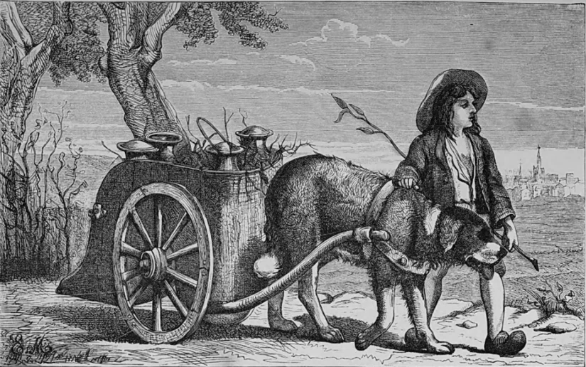
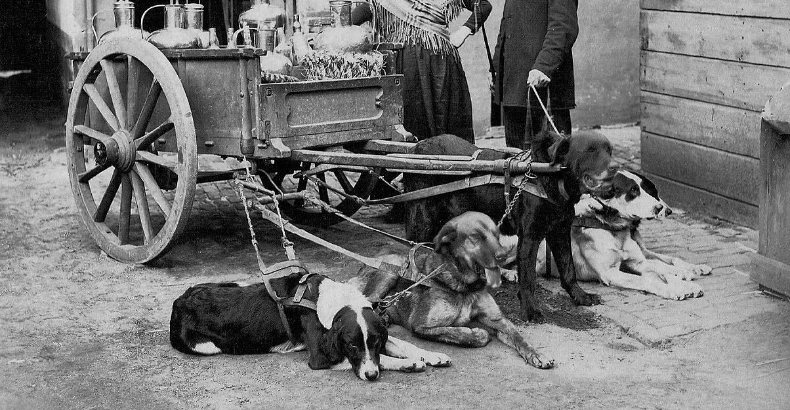
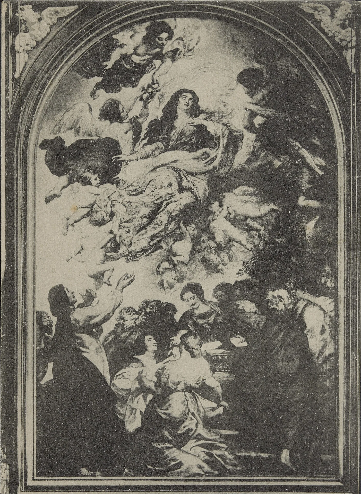
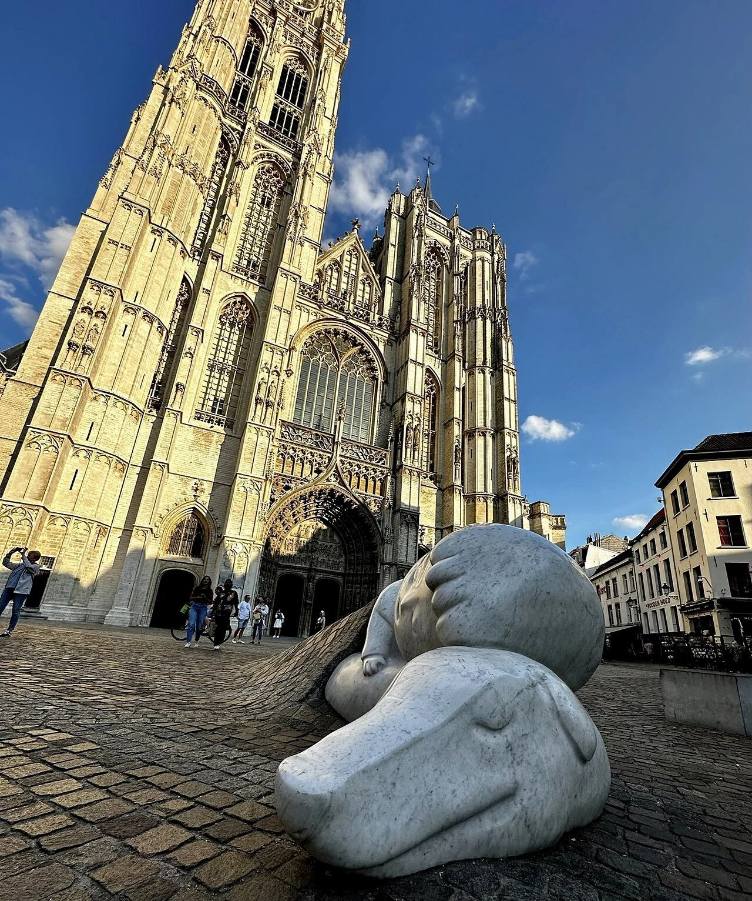

아직 펼치지 않은 카드
아직 펼치지 않은 카드
돌로 지은 숲과 금빛 천장 · 1안트베르펜 성모 대성당어린 시절 보았던 만화 속 소년이 마지막으로 보고 싶어 한 그림이 실제로 걸린 성당이 있어요. 소년은 그 그림 앞에서 무엇을 보았을까요?「플랜더스의 개」 이야기를 알아? 네로가 보고 싶던 그림이 여기 있대!
1872년 소설 속 성탄 밤벨기에 안트베르펜 · 성모 대성당
안트베르펜 성모 대성당
1872년에 나온 소설 「플랜더스의 개」에서, 우유 수레를 끌던 소년 네로와 개 파트라슈는 성탄 밤 문이 열린 안트베르펜 성모 대성당에 들어가요. 깜깜한 성당에 달빛이 들어와 네로가 그토록 보고 싶던 그림을 비춰요. 그 달빛을 손으로 비춰 보세요.
네로와 개 파트라슈는 날마다 우유 수레를 끌고 성당이 있는 도시에 갔어. 깜깜한 성당에서 달빛으로 그림을 비춰 볼까?
검수 전 시안이에요(기준서 1판). 소설 장면은 1872년 원문을 따라 옮겼고, 소설 속 일과 실제 일을 나눠 적었어요. 같은 그림의 세부 해설은 ‘십자가에서 내려지심’ 카드에 있어요. 상상은 ‘눈 감고 상상해 보기’에만 썼어요.
시안 확인용카드 단계 미리 보기
1
우유 수레를 끄는 둘
「플랜더스의 개」는 영국 작가 위다(Ouida)가 1872년에 펴낸 소설이에요. ‘위다’는 어릴 때 자기 이름 ‘루이자’를 부르던 말에서 따온 필명이에요.
소년 네로는 할아버지 예한 다스(Jehan Daas)와, 안트베르펜에서 1리그(영어권에서 흔히 약 4.8킬로미터) 떨어진 플랑드르 마을 끝 작은 오두막에 살았어요.

파트라슈는 누런 털에 머리와 다리가 크고, 늑대처럼 귀가 쫑긋 선 플랑드르 개였어요. 술 취한 철물 장수의 무거운 짐수레를 끌다가, 먼지 날리는 하얀 길 한가운데 쓰러졌어요.
할아버지와 네로가 쓰러진 개를 오두막으로 데려가 돌봤어요. 기운을 차린 파트라슈는 할아버지의 수레를 끌었어요. 할아버지는 파트라슈가 끌 수 있게 수레를 고쳤고, 둘은 날마다 소를 가진 이웃들의 우유 통을 싣고 안트베르펜 시내로 갔어요.
그림은 1872년 영국에서 나온 첫 책의 삽화예요. 오른쪽 멀리 뾰족한 탑이 선 도시가 보여요.
네로랑 개 파트라슈는 날마다 우유 통을 실은 수레를 끌고 도시에 갔어.
물어보기그림 속 멀리 보이는 뾰족한 탑은 어디일까?
2
개가 수레를 끌던 고장
소설 속 개 수레는 지어낸 것이 아니에요. 19세기 플랑드르에서는 실제로 개가 우유 수레를 끌었어요.
사진은 1880년 무렵 플랑드르의 우유 수레예요. 반짝이는 우유 통을 실은 수레 둘레에 가죽띠를 맨 개 네 마리가 쉬고 있어요.

위다는 동물을 무척 아꼈고 개를 열두 마리나 길렀다고 해요. 벨기에 신문 브뤼셀 타임스는, 영국에서는 1840년대에 이미 개에게 수레를 끌게 하는 일이 금지되어 위다가 더 마음 아파했다고 전해요.
소설에서 철물 장수는 개에게 짐을 너무 많이 싣고 채찍질했어요. 할아버지와 네로는 그런 개를 거두어 함께 일하고 함께 쉬었어요.
옛날 이 동네에서는 개가 수레를 끌었대. 사진 속에 개가 넷이나 있어!
물어보기수레에 실린 반짝이는 통에는 무엇이 들어 있을까?
3
가려 둔 두 그림
네로는 그림을 좋아했어요. 대성당에 들어가면 큰 제단 위 루벤스의 「성모 승천」 앞에 넋을 잃고 무릎을 꿇곤 했어요.
하지만 루벤스의 다른 두 그림 「십자가에 올려지심」과 「십자가에서 내려지심」은 천으로 가려져 있었어요. 소설에서 그 그림을 보려면 성당에 은화 한 닢을 내야 했어요.

“저기 가려 두었어. 그 아름다운 것들을 어둠 속에 가려 두었어!”
위다, 「플랜더스의 개」(1872) · 네로가 파트라슈에게 한 말 · 이 안내서가 옮김
그해 겨울, 안트베르펜에서 그림 대회가 열렸어요. 열여덟 살 아래라면 학생이든 농부의 아이든 누구나, 혼자 힘으로 분필이나 연필로 그린 그림을 낼 수 있었어요. 상은 해마다 200프랑이었어요.
네로는 저녁마다 쓰러진 나무에 앉아 있던 나무꾼 미셸 할아버지를 분필로 크게 그렸어요. 12월 24일 낮 열두 시, 상은 부두 관리인의 아들에게 돌아갔어요. 할아버지도 세상을 떠나, 네로와 파트라슈는 집세를 내지 못한 오두막에서 나와야 했어요.
사진은 옛 엽서 속 「성모 승천」이에요. 브뤼셀의 한 사진인쇄 회사가 펴냈고, 펴낸 해는 기록에 없어요.
네로는 그림을 정말 좋아했어. 그런데 가장 보고 싶은 그림 두 개는 천으로 가려져 있었대.
물어보기돈을 내야만 그림을 볼 수 있다면 어떤 마음이 들까?
4
성탄 밤, 달빛
성탄 전야, 네로는 눈 내리는 길을 걸어 안트베르펜으로 갔어요. 파트라슈는 새로 쌓인 눈 아래 희미하게 남은 네로의 발자국을 따라갔어요.
자정 미사가 끝난 뒤였어요. 어서 집에 가고 싶던 성당지기들이 문 하나를 잠그지 않고 두었어요. 성당 안은 깜깜했어요.
깜깜한 성당이에요. 손가락이나 마우스로 문질러 달빛을 비춰 보세요.

오늘 대성당에 걸린 루벤스의 「십자가에서 내려지심」(2023년 사진) · 사진: Art-Facts.com(2023) · CC BY-SA 2.0 · 위키미디어 공용
그림을 끝까지 비춰 보세요.
“드디어 봤어요!” 소설에서 달빛은 한순간 두 그림을 비췄어요. 그 그림은 지금도 이 대성당에 걸려 있어요.
“드디어 봤어요! 오, 하나님, 이것으로 충분해요!”
위다, 「플랜더스의 개」(1872) · 달빛 아래 그림을 본 네로의 외침 · 이 안내서가 옮김
그때 어둠을 가르고 하얀 빛이 쏟아졌어요. 하늘 높이 뜬 달이 구름을 뚫고 나왔고, 눈은 그쳐 있었어요. 빛은 아치 사이로 두 그림을 환히 비췄어요. 성당에 들어오면서 네로가 천을 걷어 둔 바로 그 그림이었어요.
비춰 본 그림은 지금 대성당에 걸린 「십자가에서 내려지심」이에요. 대성당은 이 그림과 「성모 승천」이 처음부터 이 건물을 위해 그려졌고 지금도 이곳에 있다고 소개해요.
깜깜한 성당에 달빛이 들어와서, 네로가 그토록 보고 싶던 그림을 비췄대.
물어보기달빛이 비추면 그림에서 무엇이 가장 먼저 보일까?
5
아침, 그리고 그 뒤
다음 날 아침, 안트베르펜 사람들은 성당 안 제단 가까운 곳에서 네로와 파트라슈를 함께 찾았어요. 둘은 그곳에서 함께 숨을 거두었어요.
이 소설은 오랫동안 영어권 아이들이 아끼는 책이 되었어요. 그런데 정작 플랑드르에서는 이 이야기를 아는 사람이 거의 없었대요.

1975년 일본에서 만든 텔레비전 만화가 이야기를 널리 알렸어요. 일본뿐 아니라 필리핀과 한국, 러시아에서도 방송되었어요. 1980년대 초부터 일본 여행자들이 이 대성당을 찾아왔어요.
처음에는 일본 자동차 회사 도요타가 준 기념판이 성당 앞에 있었어요. 그 자리를 2016년, 바티스트 페르묄런이 만든 하얀 대리석 조각이 이어받았어요. 광장 바닥돌이 이불처럼 솟아 잠든 둘을 덮고 있어요.
지금 성당 앞에는 네로와 파트라슈가 같이 잠든 하얀 조각이 있어.
물어보기조각 속 둘은 무엇을 이불처럼 덮고 있을까?
눈 감고 상상해 보기
눈이 그친 성탄 밤이에요. 커다란 성당 안은 깜깜하고 몹시 추워요. 곁에 엎드린 개의 따뜻한 털이 손에 닿아요. 그때 높은 창으로 하얀 달빛이 쏟아져 들어와요.
눈을 감아 봐. 깜깜하고 추운 성당이야. 옆에 강아지가 꼭 붙어 있어. 그때 창문으로 하얀 달빛이 들어와!
나의 자리
가장 보고 싶었던 것을 끝내 보게 되었을 때, 나는 무엇을 느낄까요? 지금 내가 가장 보고 싶은 ‘그림’은 무엇인가요?
꼭 보고 싶은 그림이나 장소가 있어?
마음에 닿는 한 줄을 고르거나 직접 써 보세요. 한 줄을 남기면 이 자리의 도장이 찍혀요. 이 기기에만 저장돼요.
더 깊이
궁금한 칸만 펼쳐 읽어도 괜찮아요.
알고 보면
1리그 소설은 네로의 마을이 안트베르펜에서 ‘1리그’ 떨어져 있다고 해요. 리그는 유럽의 옛 거리 단위로 나라마다 달랐는데, 영어권에서는 흔히 3마일(약 4.8킬로미터)로 쳤어요.
200프랑 그림 대회 소설 속 대회의 상은 해마다 200프랑이었고, 열여덟 살 아래라면 누구나 분필이나 연필 그림으로 낼 수 있었어요. 상은 안트베르펜에서 태어난 부두 관리인의 아들 스테판 키슬링거에게 돌아갔어요.
소설의 마을 소설에는 마을 이름이 나오지 않아요. 안트베르펜 남쪽의 호보컨(Hoboken)이 그 마을로 여겨져 왔고, 1980년대에 그곳에 소년과 개의 작은 조각이 세워졌어요.
필명 위다 위다의 본명은 마리아 루이즈 라메예요. 1839년 영국 베리세인트에드먼즈에서 태어나 1874년부터 이탈리아 피렌체에 살았고, 1908년 이탈리아 비아레조에서 세상을 떠났어요.
기록마다 다른 점
펴낸 해 브리태니커는 1872년이라고 해요. 브뤼셀 타임스의 한 기사(「숨은 벨기에」)는 1874년이라고 적었어요. 1872년에 나온 영국 첫 책과 미국 첫 책의 삽화가 남아 있어요.
은화를 내야 본 그림 그림을 천으로 가리고 은화를 받았다는 것은 소설 속 이야기예요. 이 안내서는 그 무렵 대성당이 실제로 그렇게 했는지 기록을 찾지 못했어요.
직접 가 보기
확인한 날 · 2026년 11월 18일 · 바뀌기 쉬운 정보라 정기적으로 다시 확인해요
「십자가에서 내려지심」과 「성모 승천」은 지금도 대성당 안에 있어요. 여는 때와 입장료는 대성당 누리집에서 확인해 주세요.
대성당 앞 광장(한드스훈마르크트)에 2016년에 놓인 하얀 대리석 조각이 있어요. 소설의 마을로 여겨지는 호보컨에도 1980년대에 세운 작은 조각이 있어요.
달빛으로 끝까지 금박
깜깜한 성당의 그림을 달빛으로 끝까지 비추면 카드에 금박이 입혀져요.
어둠 속 그림을 달빛으로 끝까지 비춰 보기
아이와 함께 끝까지 채색
아이와 함께 ‘영화처럼 보기’를 끝까지 보면 카드가 채색돼요.
아이와 함께 ‘영화처럼 보기’를 끝까지 보기
근거 보기 (10)
- 위다, 「플랜더스의 개」(1872) 원문 — 앤드루 킹(그리니치 대학) 엮음: 안트베르펜에서 1리그 떨어진 플랑드르 마을 끝 오두막, 누런 털·큰 머리와 다리·늑대 같은 귀, 술 취한 철물 장수, 하얀 먼지 길에 쓰러짐, 할아버지가 수레를 고침, 이웃들의 우유 통, 「성모 승천」 앞에 무릎 꿇음, 어둠 속에 가려 둔 그림과 은화, 200프랑·18세 아래·분필이나 연필, 나무꾼 미셸, 24일 낮 열두 시, 스테판 키슬링거, 밀린 집세, 예한 다스의 죽음, 성탄 전야, 눈 위의 발자국, 자정 미사 뒤 열린 문, 성당지기가 잠그지 않은 문, 구름을 뚫은 달, 아치 사이로 두 그림, 걷어 둔 천, 네로의 외침, 다음 날 아침 제단 가까운 곳
- 브리태니커: 위다 — 본명 마리아 루이즈 라메, 1839년 베리세인트에드먼즈, 1908년 비아레조, 필명은 어릴 때 부른 ‘루이자’에서, 영국 작가, 「플랜더스의 개」 1872년·오랫동안 아이들이 좋아한 책, 1874년 피렌체에 정착
- 브리태니커: 리그 — 유럽 여러 나라의 단위(3.9~7.4km), 영어권 육상 리그는 흔히 3마일(4.83km)
- 브뤼셀 타임스: 벨기에에서 잊힌 이야기가 일본에서 사랑받다 — 1980년대 초부터 일본 여행자, 1975년 일본 텔레비전 만화(일본·필리핀·한국·러시아), 도요타 기념판을 바티스트 페르묄런의 대리석 조각이 이어받음, 영국 1840년대 개 수레 금지와 위다의 분노, 개 열두 마리
- 브뤼셀 타임스: 숨은 벨기에 — 플랑드르에서는 거의 아무도 몰랐던 책, 1874년에 나왔다고 적음
- VRT NWS(2023): 한드스훈마르크트의 하얀 대리석 조각, 2016년에 놓임, 일본에서 특히 사랑받는 이야기
- 아틀라스 옵스큐라: 네로와 파트라슈 — 1980년대 호보컨(소설의 무대로 여겨지는 곳)에 작은 조각
- 안트베르펜 성모 대성당 공식 누리집: 루벤스 — 「십자가에서 내려지심」과 「성모 승천」은 이 건물을 위해 그려져 지금도 이곳에 있음
- 안트베르펜 성모 대성당 공식 누리집: 방문 안내
- 위키미디어 공용: 1872년 영국 첫 책(채프먼 앤 홀) 마찬티 삽화 · 1880년 무렵 플랑드르 개 수레 알부민 사진 · 루뱅 대학 도서관 옛 엽서 · 2023년 대성당 안과 광장 사진의 설명
그림·사진·소리 출처
- 그림: 엔리코 마찬티(1872) · 퍼블릭 도메인 · 위키미디어 공용 · 테두리와 글씨는 잘라 씀
- 사진: 찍은 사람 모름(알부민 인화) · 퍼블릭 도메인 · 위키미디어 공용 · 일부 잘라 씀
- 엽서: 벨기에 사진인쇄 회사(브뤼셀) · 퍼블릭 도메인 · 위키미디어 공용(루뱅 대학 도서관 엽서) · 글씨 부분은 잘라 씀
- 사진: Art-Facts.com(2023) · CC BY-SA 2.0 · 위키미디어 공용
- 사진: APK(2023) · CC BY-SA 4.0 · 위키미디어 공용
- 사진: Yair Haklai · CC BY-SA 4.0 · 위키미디어 공용
‘처음 만나는 기독교 문화’의 깊은 카드예요. 실제 인물의 사진은 쓰지 않았어요(옛 사진의 사람 얼굴은 잘라 냈어요). 카드 단계와 남긴 글은 이 기기에만 저장돼요.